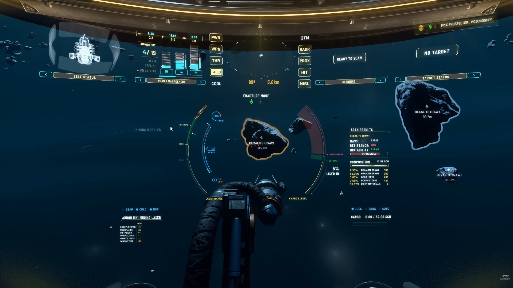
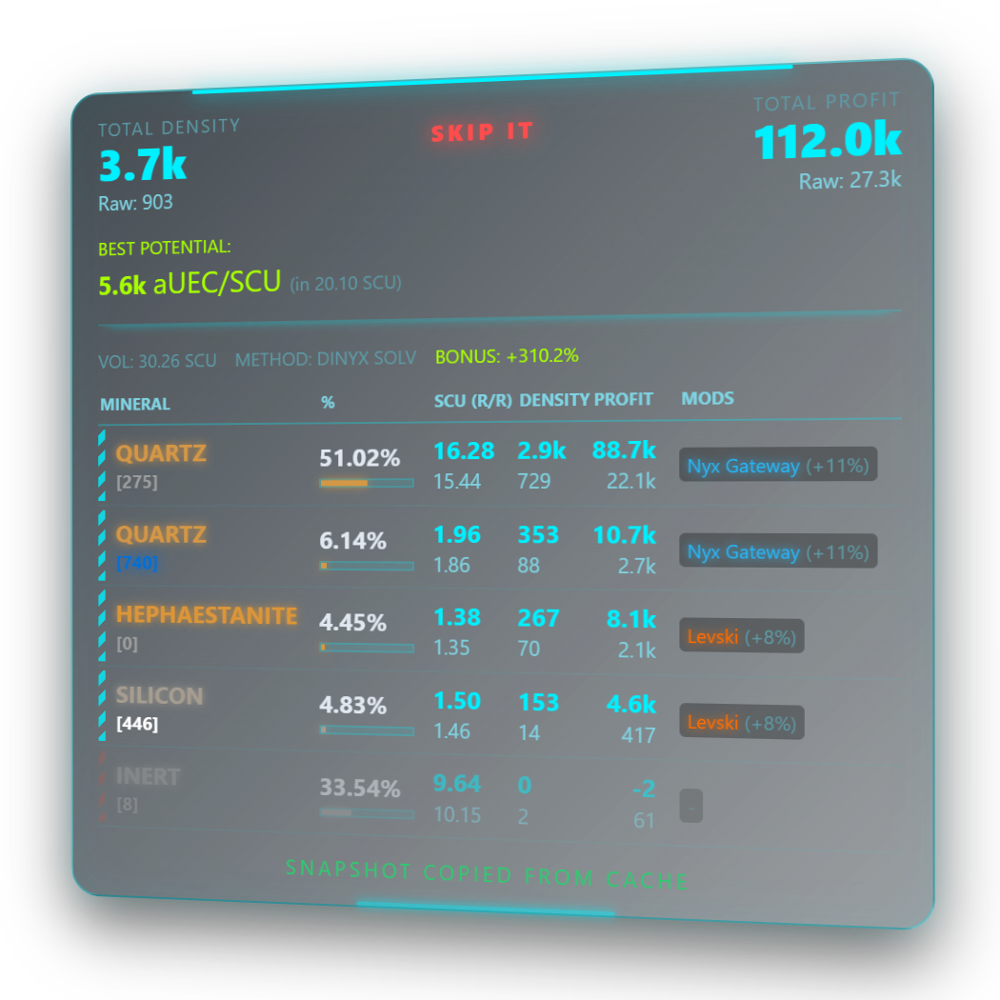
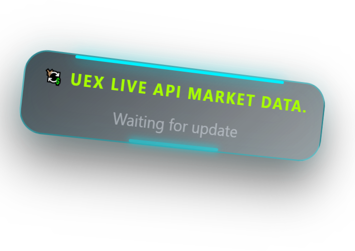
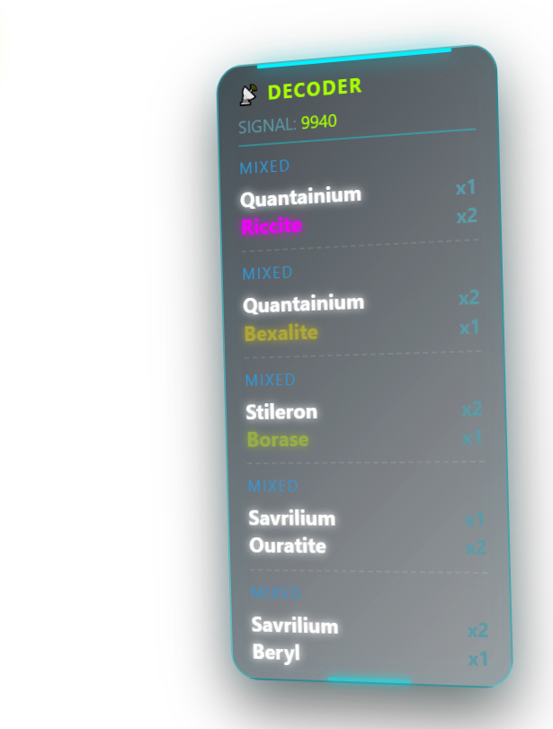
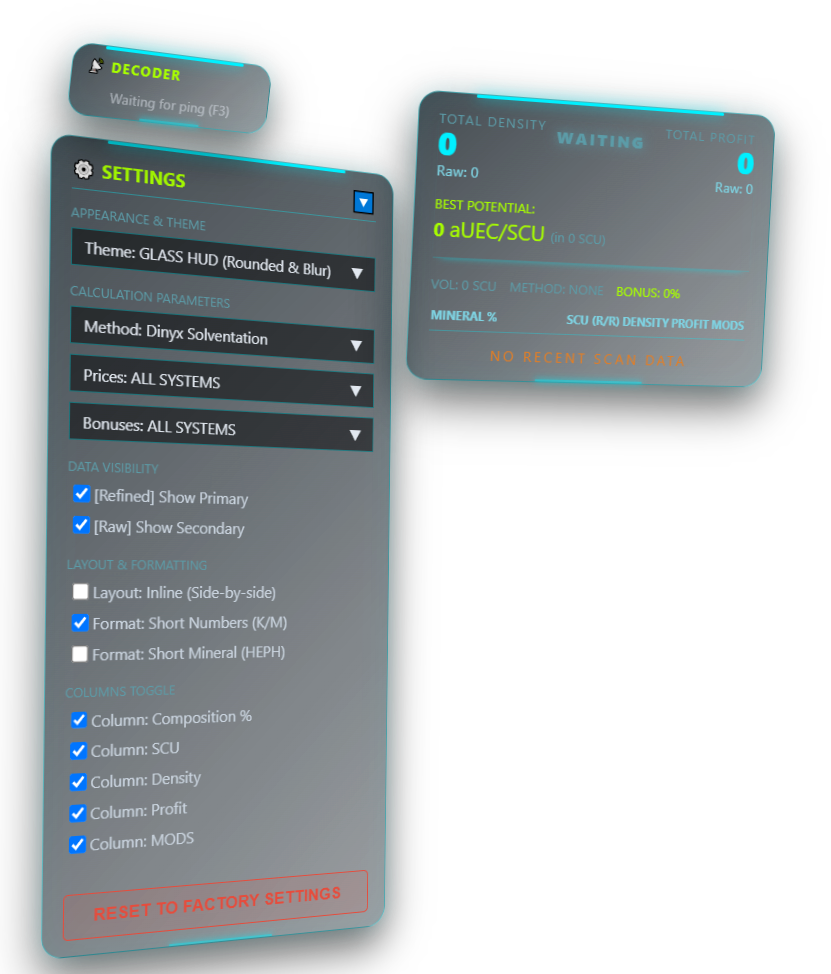

Stop Guessing.
Start Mining Smart.
A transparent, high-performance overlay for Star Citizen miners. Estimate your yield, decode radar signatures, and get back to mining.
Interactive Web Demo
Drop a screenshot of an asteroid scan to see the analysis.

> Initializing OCR...
> Reading cluster data...
> Data extracted.
0 aUEC/SCU (in 0 SCU)
| Mineral | % | SCU (R/R) | Density | Profit | Mods |
|---|---|---|---|---|---|
Core Features
Everything you need to maximize your mining runs.
Yield Analytics
Get a clear breakdown of asteroid clusters instantly. The overlay calculates the price-to-volume ratio (Density) and estimates the "Best Potential" yield for optimal fracturing. With built-in smart verdicts and highlighted mineral grades, you can quickly decide which rocks are truly worth your time.

Live UEXCorp Market Data
LithoScan HUD pulls current commodity prices and refinery yield bonuses directly from the UEXCorp API. It automatically calculates the best refinery stations for your specific cargo to help optimize your routes.

Signature Decoder
Evaluate radar pings before closing in. By scanning the signature number directly from your screen, the overlay calculates all possible mineral combinations, revealing potential high-value deposits from a distance.

HUD Customization
Adjust the overlay to fit your preferences. The settings panel allows you to toggle specific data columns, switch between full and abbreviated number formats, and change visual themes (such as Glass, Classic, or Amber) to match your ship's UI.

See It In Action
Watch how the overlay seamlessly integrates with the Star Citizen HUD.
Start Mining Smarter
Download the latest version of LithoScan HUD. The tool uses real-time screen capture via global hotkeys, runs locally on your machine, and requires no complicated setup.
Download for Windows (64-bit)Current Release: v1.0.0 | Requires Windows 10/11